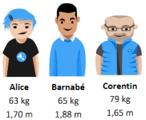
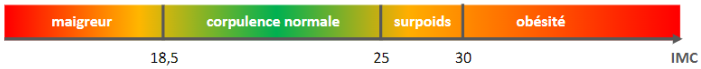
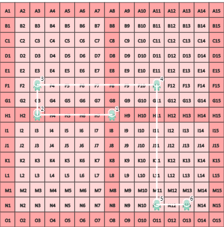
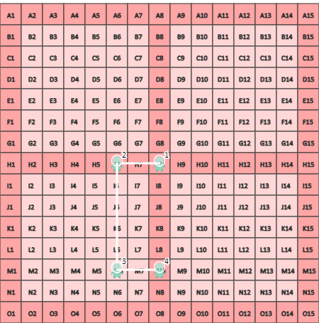
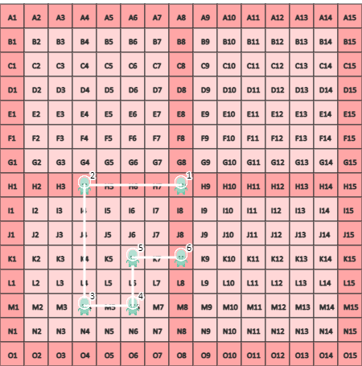

Les instructions conditionnelles
🟥 1. Introduction¶
Une instruction conditionnelle, ou instruction de test, permet de faire des choix en fonction de la valeur d’une condition. On parle souvent d’une instruction si-alors, ou if-else en anglais.
Une condition est une instruction qui est soit vraie, soit fausse. On dit qu’il s’agit d’un booléen.
Exemple : Par exemple, si une variable a vaut 5 et qu'une variable b vaut 10 alors la condition a < b est une condition qui est vraie, tandis que les conditions a > b et a == b sont fausses.
On peut tester cela en exécutant les cellules suivantes :
a = 5
b = 10
a < b
a > b
a == b
⚠️ Source d'erreur classique : Le test d'égalité entre deux variables se fait avec un double égal
==(car le simple=a un rôle différent : celui d'affecter une valeur à une variable).
Pour tester des inégalité larges (comme a ≤ b et a ≥ b) ou l'absence d'égalité (comme a≠ b) on utilise les syntaxes suivantes :
- le signe
<=pour inférieur ou égal - le signe
>=pour supérieur ou égal - le signe
!=pour n'est pas égal à
a <= b
a >= b
a != b
On peut résumer les tests possibles dans le tableau ci-dessous :
| Test | Syntaxe Python |
|---|---|
| a=b | a == b |
| a≠ b | a != b |
| a<b | a < b |
| a≤ b | a <= b |
| a>b | a > b |
| a≥ b | a >= b |
| a<b<c | a < b < c |
| a≤ b ≤ c | a <= b <= c |
| a<b≤ c | a < b <= c |
Exemple concret¶
On souhaite connaître le vainqueur d’un match de football connaissant le score des deux équipes A et B . À la fin de l'algorithme suivant , la variable vainqueur contient la réponse à la question :
si scoreA > scoreB alors
vainqueur ← "équipe A" (la flèche ← signifie "prend la valeur")
sinon
vainqueur ← "équipe B"
Cet algorithme s'écrirait en Python de la façon suivante :
if scoreA > scoreB:
vainqueur = "équipe A"
else:
vainqueur = "équipe B"
🧐 Dans ce programme, il y a une condition
scoreA > scoreB. Si elle est vraie, alors le vainqueur sera l'équipe A, sinon ce sera l'équipe B. On voit bien qu’un choix est effectué (pour la variablevainqueur) selon la valeur de la condition.
Notre algorithme n'est pas optimal car il y a un troisième cas possible, celui du match nul. On peut l'adapter de la façon suivante pour en tenir compte :
si scoreA > scoreB alors
vainqueur ← "équipe A" (la flèche ← signifie "prend la valeur")
sinon si scoreA < scoreB alors
vainqueur ← "équipe B"
sinon
vainqueur ← "Match nul"
Cet algorithme s'écrirait en Python de la façon suivante :
if scoreA > scoreB: # si scoreA > scoreB
vainqueur = "équipe A"
elif scoreA < scoreB: # sinon si scoreA < scoreB
vainqueur = "équipe B"
else: # sinon
vainqueur = "Match nul"
🧐 Dans ce nouveau programme, il y a deux conditions :
scoreA > scoreBetscoreA < scoreB. Si la première est vraie, alors le vainqueur est l'équipe A, sinon on teste si la seconde est vraie et dans l'affirmative le vainqueur est l'équipe B, sinon c'est qu'il y a match nul.
Synthétisons comment écrire des instructions conditionnelles en Python tout de suite !
🟥 2. La syntaxe en Python¶
Pour écrire des instructions conditionnelles en Python, il faut utiliser la syntaxe suivante :
if condition1:
bloc_instructions_1
elif condition2:
bloc_instructions_2
else:
bloc_instructions_3
Les mots-clés if, elif (contraction de else if) et else sont les traductions respectives de "si", "sinon si" et "sinon".
Remarques importantes :
- ⚠️ Il ne faut pas oublier les deux points (
:) à la fin des lignes avecif,elifetelse - Il est nécessaire de spécifier une condition après les mots clés
ifetelif, mais il ne faut pas en donner après le mot cléelse - Les blocs d'instructions à effectuer selon le cas sont indentés (“décalage vers la droite”). Ces indentations sont obligatoires dans la syntaxe Python et se font automatiquement si le
:n’a pas été oublié. - Les mots clés
elifetelsesont optionnels, c'est-à-dire que l’on peut avoir seulement unifou unifsuivi d'unelsecomme ceci :
if condition:
bloc_instructions
ou
if condition:
bloc_instructions_1
else:
bloc_instructions_2
- On peut ajouter autant d'instructions
elifque l'on souhaite (dépend du nombre de cas à considérer)
🟥 3. À vous de jouer !¶
✏️ Exercice 1 : Retour sur le vainqueur d'un match
On peut écrire la fonction suivante pour traduire l'algorithme précédent sur le vainqueur d'un match entre deux équipes.
def gagnant(scoreA, scoreB):
if scoreA > scoreB:
vainqueur = "équipe A"
elif scoreA < scoreB:
vainqueur = "équipe B"
else:
vainqueur = "Match nul"
return vainqueur
✍️ Question 1 : Inspectez le code de cette fonction pour repérer :
- son nom
- son nombre de parametres et leurs noms
- le nombre de valeurs renvoyées et leurs noms
🐍 Question 2 : Écrivez le code de cette fonction dans la cellule ci-dessous (sans faire de copier-coller !).
# à vous de jouer !
⚠️ N'oubliez pas d'exécuter la cellule ci-dessus pour mémoriser cette fonction et pouvoir l'utiliser par la suite !
🐍 Question 3 : Faites l'appel gagnant(4, 1) et vérifiez que la valeur renvoyée est cohérente.
# à vous de jouer !
🐍 Question 4 : L'équipe A a marqué 2 buts et l'équipe B en a marqué 3. Quel appel à la fonction gagnant faut-il faire pour connaitre le vainqueur de ce match ? Faites-le et vérifiez !
# à vous de jouer !
🐍 Question 5 : Proposez un appel à la fonction gagnant qui renvoie la chaîne de caractères "Match nul". Testez-le !
# à vous de jouer !
✏️ Exercice 2 : Vérifier sa compréhension
Dans cet exercice on propose plusieurs questions pour vérifier votre compréhension des instructions conditionnelles et de la syntaxe du langage Python pour les écrire.
Il suffit d'exécuter chacune des cellules suivantes pour faire apparaître la question.
🐍 Question 1
from IPython.display import IFrame
IFrame('https://www.codepuzzle.io/DQF76', width='100%', height=950)
🐍 Question 2
from IPython.display import IFrame
IFrame('https://www.codepuzzle.io/IDA4GZ', width='100%', height=900)
🐍 Question 3
from IPython.display import IFrame
IFrame('https://www.codepuzzle.io/DGLXR', width='100%', height=900)
🐍 Question 4
from IPython.display import IFrame
IFrame('https://www.codepuzzle.io/IDNZE5', width='100%', height=700)
✏️ Exercice 3 : Inscription sur un réseau social
[image non reprise dans cette copie]
Pour s’inscrire sur certains réseaux sociaux, il faut avoir au moins 13 ans. On veut écrire une fonction qui indique si un utilisateur peut s’y inscrire en fonction de son âge.
La fonction age_requis a pour paramètre l'age d’un utilisateur et renvoie True (= Vrai) s’il peut s’inscrire sur le réseau social en question, et False (= Faux) si ce n’est pas le cas.
🐍 Question 1 : Exécutez la cellule suivante et complétez le code de la fonction age_requis et vérifiez votre proposition.
from IPython.display import IFrame
IFrame('https://www.codepuzzle.io/IDYDRB', width='100%', height=900)
🐍 Question 2 : Copiez le code correct de la fonction age_requis dans la cellule ci-dessous et exécutez-là pour mémoriser cette fonction.
# code à recopier ici
🐍 Question 3 : Testez la fonction avec un appel renvoyant la valeur True et un appel renvoyant la valeur False.
# à vous de jouer !
# à vous de jouer !
✏️ Exercice 4 : Application de fitness
Crédits : Cet exercice est grandement inspiré du travail proposé par Franck Chevrier sur son site python-lycee.com. Activité d'origine : https://www.python-lycee.com/parcours-apprentissage-pl3
Les applications de fitness permettent de calculer l’Indice de Masse Corporelle (IMC) de l’utilisateur. Celui-ci se calcule avec la formule :
IMC=masse / taille2
où la masse est exprimée en kg et la taille en mètre.
La fonction imc suivante permet de calculer et renvoyer l'IMC d'une personne :
def imc(masse, taille):
indice = masse / (taille ** 2)
return indice
🐍 Question 1 : Testez la fonction imc pour les 3 personnes présentées (il faut faire les bons appels).

# à vous de jouer !
# à vous de jouer !
# à vous de jouer !
🐍 Question 2 : On considère que l'IMC d'un individu est dans la norme s'il est compris entre 18.5 et 25. On veut écrire une fonction diagnostic qui permet de renvoyer un message indiquant si un individu possède un IMC dans la norme ou non.
from IPython.display import IFrame
IFrame('https://www.codepuzzle.io/IPBCNW', width='100%', height=600)
🐍 Question 3 : Une fois le code bien ordonné, copiez le code de la fonction diagnostic dans la cellule ci-dessous. Testez ensuite cette fonction pour les 3 personnages.
# recopier le code de la fonction ici
# test pour Alice
# test pour Barnabé
# test pour Corentin
🐍 Question 4 : Adaptez la fonction Python diagnostic pour obtenir une analyse plus précise, en tenant compte de la grille de lecture ci-dessous.

🆘 Inspirez-vous de la fonction
gagnantet regardez dans le tableau donné au départ pour voir la bonne syntaxe pour écrire des inégalités.
# à vous de jouer !
🐍 Question 5 : Testez la nouvelle fonction diagnostic pour les 3 personnages précédents.
# test pour Alice
# test pour Barnabé
# test pour Corentin
✏️ Exercice 5 : Alien Python - Dessiner un parcours
⚠️ N'oubliez pas d'exécuter la cellule ci-dessous avant de poursuivre ! ⚠️
from alien_python import *
📣 Pour les questions de cet exercice, exécutez le programme donné puis dessinez le parcours de l'alien en cliquant sur les différentes positions parcourues. Vous pouvez annuler la dernière position en cliquant dessus.
🐍 Question 1
centrer_alien() # l'alien est au départ en case H8
a = 2
b = 3
gauche(a)
bas(b)
if a < b:
droite(b)
else:
haut(b)
haut(2*a)
dessiner_parcours()
🐍 Question 2
centrer_alien()
a = 10
b = 7
haut(4)
if a > b :
droite(6)
bas(3)
gauche(3)
if a < b :
haut(2)
gauche(2)
dessiner_parcours()
🐍 Question 3
centrer_alien()
a = 5
b = 2
if a < b:
droite(a)
bas(a + b)
else:
gauche(a)
haut(a + b)
dessiner_parcours()
🐍 Question 4
centrer_alien()
a = 1
b = 2
droite(a + b)
if a < b:
haut(a)
gauche(b)
b = 5
else:
b = b + 1
haut(b)
bas(b)
dessiner_parcours()
🐍 Question 5
centrer_alien()
a = 1
b = 2
c = 5
gauche(c - a - b)
if a > b:
haut(a)
gauche(a + b)
elif c <= a:
haut(c)
bas(c - a)
else:
b = 2 * b
haut(b + 2)
dessiner_parcours()
✏️ Exercice 6 : Alien Python - Compléter un programme
📣 Pour les questions de cet exercice, complétez chaque programme en remplaçant les pointillés par les bonnes valeurs afin d'obtenir le déplacement donné. Puis exécutez le programme pour vérifier s'il est correct.
⚠️ N'oubliez pas d'exécuter la cellule ci-dessous avant de poursuivre ! ⚠️
from alien_python import *
🐍 Question 1
Voici le déplacement à obtenir (les numéros correspondent aux différentes étapes) :

centrer_alien()
a = 8
b = 10
c = ...
d = ...
gauche(...)
if a < b :
e = c - 2
else :
e = c - 3
haut(e)
droite(a)
if a > b :
f = d + 3
else :
f = d + 6
bas(f)
droite(...)
verifier_programme(['H8', 'H3', 'F3', 'F11', 'N11', 'N13'])
🐍 Question 2
Voici le déplacement à obtenir (les numéros correspondent aux différentes étapes) :

centrer_alien()
a = ...
b = ...
gauche(a)
... a < b:
bas(b)
...:
haut(b)
droite(a)
verifier_programme(['H8', 'H6', 'M6', 'M8'])
🐍 Question 3
Voici le déplacement à obtenir (les numéros correspondent aux différentes étapes) :

centrer_alien()
a = ...
gauche(...)
if a < 4:
bas(5)
if a > 2 :
droite(2)
haut(2)
droite(2)
verifier_programme(['H8', 'H4', 'M4', 'M6', 'K6', 'K8'])
✏️ Exercice 7 (Bonus) : Mention au bac
On veut écrire une fonction Python mention_bac qui prend en paramètre la moyenne moy d’un élève au baccalauréat et qui renvoie selon les cas une chaîne de caractères : "Sans mention", "Assez bien", ... selon le tableau suivant :
| Moyenne | Mention |
|---|---|
| [0;8[ | Recalé |
| [8;10[ | Rattrapage |
| [10,12[ | Sans mention |
| [12;14[ | Assez bien |
| [14;16[ | Bien |
| [16;18[ | Très bien |
| [18;20] | Félicitations |
Exemples :
>>> mention_bac(13.4)
'Assez bien'
>>> mention_bac(8)
'Rattrapage'
🐍 Question : Écrivez cette fonction mention_bac et testez-là dans tous les cas de figure.
# à vous de jouer !
✏️ Exercice 8 (Bonus) : Combiner des conditions
Parfois il est nécessaire de combiner plusieurs conditions dans un test.
Exemple : à la faculté, pour valider son semestre il est parfois nécessaire d’obtenir au moins la moyenne (soit 10/20) dans toutes les matières. De manière simplifiée, on suppose ici qu’il n’y a que trois matières (A, B et C). Ainsi, à la fin de l’algorithme suivant, la variable resultat vaut True si le semestre est validé et False sinon.
si noteA >= 10 et noteB >= 10 et noteC >= 10 alors
valide = True
sinon
valide = False
Il est nécessaire que les trois conditions noteA >= 10, noteB >= 10 et noteC >= 10 soient vraies pour que le trimestre soit validé.
En Python, on utilise le mot clé and pour traduire le "et" et le mot clé or pour traduire le "ou".
| Condition | Syntaxe Python | Interprétation |
|---|---|---|
| condition1 et condition2 | condition1 and condition2 |
est vraie si les deux conditions sont vraies |
| condition1 ou condition2 | condition1 or condition2 |
est vraie si au moins l'une des deux conditions est vraie |
🧐 On peut combiner autant de conditions que l'on souhaite dans un test.
🐍 Question 1 : On veut écrire une fonction semestre_valide qui possède les trois notes en paramètres et qui renvoie True si le semestre est validé et False sinon.
Mettez dans la zone jaune et dans le bon ordre les lignes de code de la fonction. Il faut bien respecter les indentations. Attention, certaines instructions sont fausses et donc inutiles, elles sont à laisser dans la partie sur fond gris. Cliquez ensuite sur le bouton pour vérifier.
from IPython.display import IFrame
IFrame('https://www.codepuzzle.io/IPMSWZ', width='100%', height=800)
🐍 Question 2 : Une fois le code bien ordonné, copiez le code de la fonction semestre_valide ci-dessous et testez ensuite cette fonction en veillant à tester les différents cas de figure.
# à vous de jouer !
Références :
- L'exercice 4 est grandement inspiré du travail proposé par Franck Chevrier sur son site python-lycee.com. Activité d'origine : https://www.python-lycee.com/parcours-apprentissage-pl3
Les enseignants de SNT du lycée Emmanuel Mounier, ANGERS